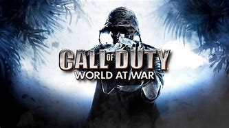

This page shows all of what is now considered an archaic game in the Call of Duty Zombies Treayrch lineup. The games feature a brief description of what they were like at the time and what they offer in gameplay - once clicked upon.

"The first game to introduce the zombies gamemode in a treyarch game, it featured bosses, perks, and every basic compenent we know of today! AT the end of the game, pack-a-punch - which is now a staple in zombies - was invented! A story began to brew and thus a community of players flocked. It ended early to debut the next game among the boiling hype!"